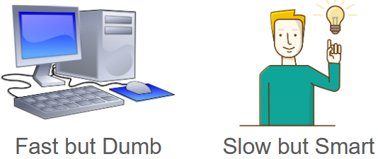

Introduction to Computing#
REMINDER Click on the rocket symbol in the top right and press live code. Go to Welcome for more information!
You probably use computers every day to send emails, write reports, create presentations, or watch entertainment. However, that is only a very small subset of the full capabilities of computers. Currently, almost everything in the business world is supported by computers. Google’s internet servers have allowed the entire world to have access to its services at an extremely high speed. Amazon may collect billions of customer interactions to provide product recommendations using artificial intelligence. By better understanding the fundamentals of computing and artificial intelligence, you will be able to leverage this knowledge to empower your business solutions and daily operations, even if you aren’t a full-blown programmer.
Computers are powerful because they can complete calculations at a level of speed and accuracy that is impossible for humans. Think about how long it would take for you to calculate 7823 x 9201, versus a computer which can solve it instantaneously. However, computers are also extremely dumb. Without any human intervention, it cannot do anything beyond storing information and performing arithmetic. Thus, in solving any problem, the computer’s only role is to carry out rote calculations. It is the human’s role to tell it what to do.
{kind=link}
The list of commands that a human uses to instruct a computer to complete a task is called an algorithm. In essence, the act of using a computer to solve problems involves creating algorithms. Once a programmer has designed an algorithm, they use code, the language of a computer, to write this algorithm as a program.
Let’s see a detailed example of how one might design and implement an algorithm and program.
Linear vs Binary Search Algorithm#
Suppose we are looking for the word “professional” in the English Dictionary. One algorithm that we can use to solve this is to flip one by one through each page of the dictionary. For each page check to see if that word is contained in the dictionary. If it is then we choose that word. Otherwise we flip the page and check the next word. This is guaranteed to work but obviously very slow. This is known as a linear search.
Is this how a human would normally search for a word in a dictionary? Of course not! What would you do? Open to the middle of the book. Let’s say that the middle of the book contains words of the letter “M”. Because P is after “M” we know that the word “professional” is in the second half of the book! Thus, we can completely eliminate checking the first half of the book and only worry about the second half of the book. We can repeat this process again and again, halving the book each time until we find our word. This is known as a binary search.
{kind=link}
How much more efficient is the binary search compared the linear search? There are around 1,000,000 words in the English language. For our linear search, this would require us to read the majority of the book, somewhere between 500,000 to 1,000,000 words! On the other hand, in the second algorithm, we half our search space for every word. 1,000,000 becomes 500,000,000 becomes 250,000,000 and so on. After halving only \(log_2(1,000,000) = \)20 times we are guaranteed to find any word!
Now, let’s actually write the second algorithm. When we write an algorithm in English, it is called pseudocode. This is because actual code is written in a programming language such as Python, Java, or C++.
Pseudocode#
Obtain a dictionary (not to be confused with a Python dictionary!).
Repeat steps 3-7 until the word has been found.
Open the dictionary to the middle of it.
If the word on the page is the word we are looking for, read the definition and exit.
Otherwise, if the word on the page alphabetically is before the word we are looking for, discard the first half of the book.
Otherwise, if the word on the page is alphabetically after the word we are looking for, discard the second half of the book.
Otherwise, If the dictionary is empty, then exit, as the word is not in the dictionary.
By the end of this module, you will learn the Python syntax to write this pseudocode. The dictionary is represented as a list that will be stored inside a variable. Step 2’s repetition until a condition is satisfied will be implemented using loops. The if, otherwise logic used from steps 4-7 will be implemented using conditionals. Lastly, we can embed this algorithm into a function so it can be called many times on a variety of inputs.
Mutliple-Choice Quiz#
Answer the following multiple choice questions.
Which of the following are characteristics of a computer? Which of the following are characteristics of a human?
A. Able to perform a large number of operations efficiently. B. "Thinks" in code C. "Thinks" in pseudocode D. Able to plan the solution of a problem
Characteristics of a computer are A and B. Characteristics of a human are C and D. Humans have the creativity to think of algorithms. They will often plan these algorithms in pseudocode. They then translate this idea into actual code that can be interpreted by the computer. The computer can carry these computations very quickly.
Which of the following is the LEAST similar to an algorithm?
A. A recipe for a cake B. A manual for constructing furniture C. A textbook for a college class D. A series of orders from your boss
The answer is C. Answer choices A, B, and D are all examples of a series of instructions, similar to an algorithm. While C, a textbook, might tell a user how to do something, it does not directly tell the user what to do.
Activity#
Think about a problem that you encounter in your work or daily life. Now that you have learned about algorithms, write some psuedocode to solve this problem. Remember, pseudocode should be a list of precise English instructions that another person can easily follow to complete the task. It should contain some form of repetition and If-Otherwise decisionmaking.